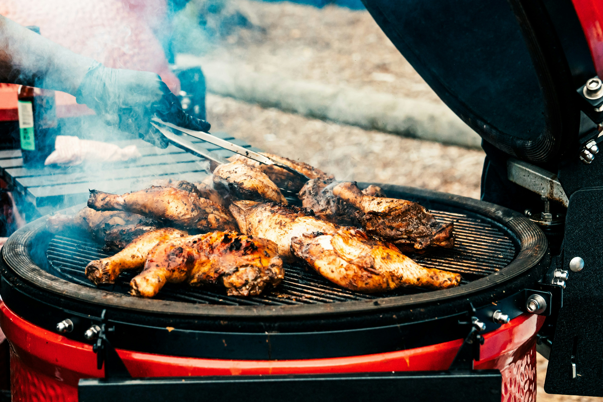

HOME
Jerk Chicken Recipe

Photo by Jopopz Tallorin on Unsplash
Description
Jerk Chicken is a bold, smoky dish originating from Jamaica, known for its deeply spiced, fiery marinade made
from ingredients like scotch bonnet peppers, allspice, thyme, and garlic. It's one of the most
recognizable dishes in Caribbean cuisine and carries a rich cultural history tied to the Maroon people
of Jamaica. The result is intensely flavorful meat with a charred, caramelized exterior and juicy
interior — it's the kind of dish that's as much about the aroma as the taste.
Ingredients
- 1 chicken, jointed (or a pack of mixed chicken pieces)
- 1 tbsp olive oil
- 2 tbsp barbecue sauce
- lime wedges, to serve
For the brine (optional)
- 1 tbsp sea salt
- 1 large onion, roughly chopped
- 1–2 rosemary sprigs
- 2 bay leaves
- black peppercorns
For the jerk rub
- 2 tbsp ground allspice or all-purpose seasoning
- 1 tsp allspice berries
- 1 tsp freshly grated nutmeg
- 1 tbsp ground cinnamon
- 1 tbsp grated fresh ginger
- 1 tbsp freshly ground black pepper
- 1 tbsp salt
- 1 tbsp light brown sugar
- 1½ tbsp cider vinegar
- 1½ tbsp soy sauce
- 1 onion, chopped
- 8 garlic cloves, roughly chopped
- 2–3 Scotch bonnet chillies, seeds removed (unless you like it hot), roughly chopped
- large handful fresh thyme, leaves picked, or 2 tsp dried thyme
Steps
- If you want to brine the chicken, put the salt, onion, rosemary, bay leaves and peppercorns in a big
pot, add about 1 litre/1¾ pints cold water and stir to dissolve the salt. Add the chicken,
adding a little more water if necessary to ensure they are completely submerged. Leave in the
fridge for at least 4 hours or overnight. Drain the chicken and pat dry, discarding the brine.
- Put all the ingredients for the jerk rub into a blender or a pestle and mortar, add about 3
tablespoons water and blitz or pound until smooth.
- Put the chicken in a bowl and pour over the jerk rub. Using a spoon (or wearing disposable or clean
rubber gloves to protect your skin from the Scotch bonnets), turn the chicken in the mixture.
Cover and leave to marinate in the fridge for at least 4 hours or preferably overnight.
- Take the chicken out of the fridge 1–2 hours before you want to cook it, to bring it up to room
temperature.
- Preheat the oven to 180C/160C Fan/Gas 4. Put the chicken on a rack over a roasting tin and cook for
30 minutes, turning the chicken after about 15 minutes and basting with the juices from the
roasting tin. The chicken is cooked when the skin is an even dark brown colour and the juices
run clear when pierced with a skewer in the thickest part.
- Turn up the oven to 200C/180C Fan/Gas 6. Pour off the chicken juices from the roasting tin and mix
with barbecue sauce. Baste the chicken with this mixture and return to the oven for 10 minutes,
until crispy.
- Serve with lime wedges, rice and peas and fried plantains. If you like you can also serve coleslaw
and hot sauce.